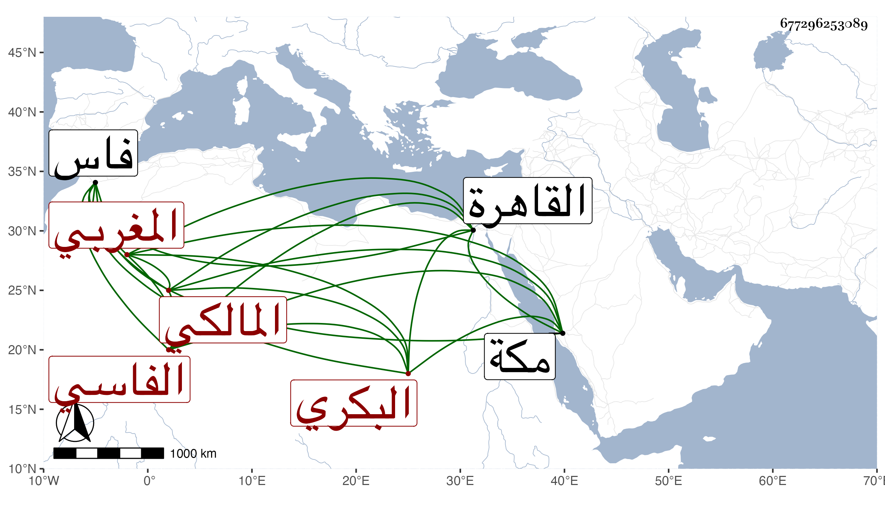

0902Sakhawi.DawLamic.ITO20230111-ara1.EIS1600.677296253089
Biography ID: 677296253089
916
علي بن عياد بن أبي بكر بن علي نور الدين أبو الحسن البكري البستريني الأصل الفاسي المغربي المالكي . ولد تقريبا سنة ثلاثين وثمانمائة بملوية من أعمال فاس وحفظ الرسالة وغيرها كالألفية وبعض التسهيل واللامية في الصرف وتلا لنافع على جماعة منهم محمد بن إبراهيم المزاني وعنه أخذ في العربية واللغة وأخذ في الفقه عن أبي بكر الدخيسي وأسئلة كثيرة عن محمد القوري وسمع الحديث على عبد الرحمن الثعالبي ومحمد الواصلي في آخرين وقدم القاهرة سنة ست وستين ثم في سنة ثلاث وتسعين . وحج في كل منهما ولقيني بمكة في ثانيتهما فسمع مني في موسمها بحضرة الشيخ عبد المعطي وعظمه في الصلاح وكتبت له إجازة وأوقفني على لطائف الإشارات في مراتب الأنبياء في السموات في المعراج ، والغالب عليه الخير وسلامة الصدر وقال إنه لقي الفخر الديمي ورجع .
